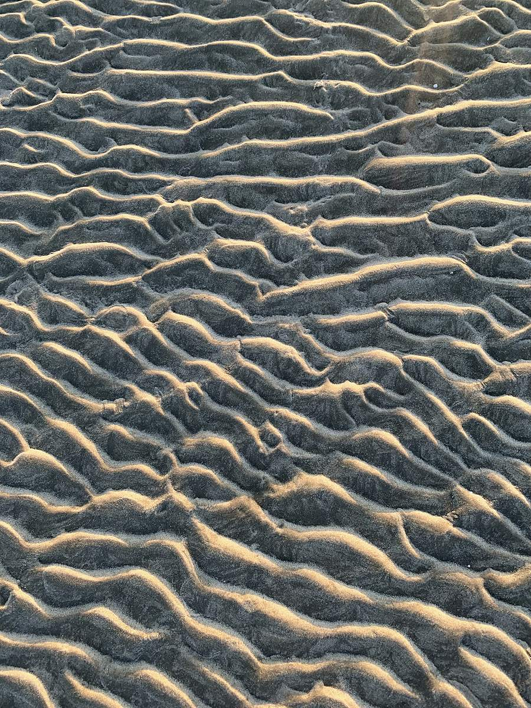

Lençóis Maranhenses
Thousands of freshwater lagoons in a desert of white dunes. Here is how you get there, how long it takes, and what we take off your hands.
Rain falls on the Lençóis in the first half of the year and collects between the dunes, turning more than 1,500 square kilometres of white sand into thousands of clear lagoons. There are no roads inside the park and no signposts. Everything depends on the vehicle, the driver and the hour you go.
That is why two people can do the same three days here and come home with completely different trips. The standard tour leaves from the same town, at the same time, for the same lagoons as everyone else. It is beautiful, and it is a fraction of what is there.
We plan the other version: the route, the timing, the crossings and the people who take you, built around the days you have and what you actually want to see.
Four days, six days, eight days
The honest answer to the question everybody asks first. Fewer days is not worse, it just changes what is possible.
Four days
The dunes and the lagoons near one base, plus a day on the Preguiças river. You will see it properly and leave wanting more. This is the version most people do.
Six days
Enough to cross between Barreirinhas and Atins slowly instead of racing it, keep one day with nothing planned, and reach a lagoon that takes real driving to get to.
Eight days or more
Now the good things fit: a night out among the dunes, a day of kitesurf if the wind is in, and the afternoons where nothing is scheduled and something happens anyway.
If you only have three days and you are already in Brazil, tell us anyway. Sometimes the right answer is a different destination this year and the Lençóis the next, and we will say so.
The lagoons are not there all year
Rain fills them in the first half of the year. They are at their fullest around the middle of the year and shrink from there. Outside that window the landscape is still extraordinary, it is simply a desert rather than a desert full of water.
Terracotta is the fullest stretch, sand is in between, dim is when the lagoons are low or gone. It shifts every year with the rain, so write to us before you buy the flight and we will tell you what this year is actually doing.
How the journey actually works
The part that stops most people. It is long, but it is not complicated once someone has done it before.
Fly into São Luís
The state capital, connected to São Paulo, Brasília, Fortaleza, Recife and Belém. From there it is a road day to the edge of the park.
Or arrive from Fortaleza
Better if you are already on the northeast coast or coming down the Wind Route from Jericoacoara. It is a longer road, and a more interesting one.
Then it stops being road
A boat along the Preguiças river, or 4x4 over the sand. Both need someone who knows the tide and the track. This is the part we take over completely.


Everything on the ground, before you land
The lagoon at seven in the morning
Most groups reach the dunes in the late afternoon, together, at the same three lagoons. It is beautiful and it is crowded, and it is what happens when everyone books the same tour from the same street.
The other version starts before the light is up, with a driver who does not mind the hour, at water with nobody else in it. Or it ends after the last vehicle has gone, eating in the dunes while the sun drops, driving back under the moon.
Neither is a product you can book online. Both are simply a matter of knowing the place well enough to plan around everyone else.



Tell us your dates and we'll tell you the truth
Whether the lagoons will be full, how many days you really need, and what it costs. Before you book anything.
yasminnbistricky@gmail.com